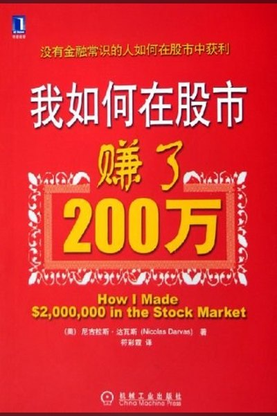

封面图片：豆瓣图书，仅用于书目识别
形态与价格行为 · 重要补充
我如何在股市赚了 200 万美元
How I Made $2,000,000 in the Stock Market
核心命题：箱体理论：价格在箱体中震荡，突破箱体上沿即买入，跌破下沿即止损。
“我不预测，我只跟随价格的箱子。”
最有价值的技术观点
以下 5 条按“可直接用于交易决策”的标准筛选，而不是按书中的篇幅。
01箱体（Box）的构建
把价格最近的震荡区间画成一个箱子；箱体上沿是阻力，下沿是支撑。
02突破买入 + 箱体上移
价格突破箱体上沿并站稳，形成新箱体，旧箱体上沿变成新支撑（止损位）。
03成交量确认
突破时必须放量，否则视为假突破，继续等待。
04止损明确
跌破新箱体下沿（即买入箱体上沿）即止损，亏损有限。
05只做上升箱体序列
箱体底部不断抬高，才是健康趋势；箱体下移说明趋势转弱。
可执行要点
- 把每一次横盘整理画成箱体，等突破再动手。
- 箱体上沿是买点，也是止损参考。
- 箱体不断上移才加仓。